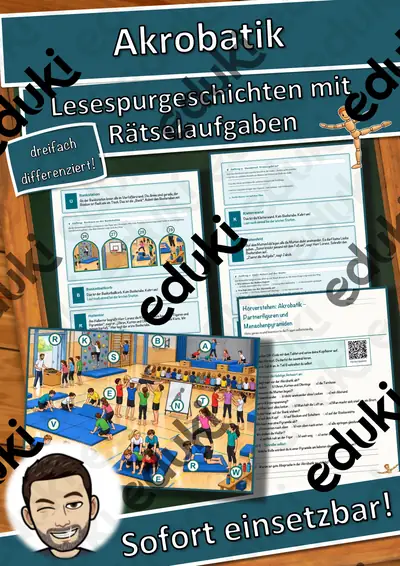
Akrobatik – Partnerfiguren und Menschenpyramiden – Lesespurgeschichte mit Rätselaufgaben (Klasse 6)

Aschermittwoch und Fastenzeit – vom Fasching bis Ostern – Lesespurgeschichte mit Rätselaufgaben (Klasse 6)
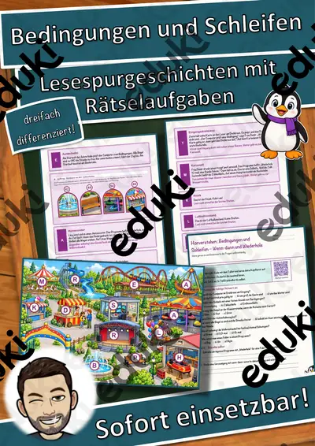
Bedingungen und Schleifen – Wenn-dann und Wiederhole – Lesespurgeschichte mit Rätselaufgaben (Klasse 6)
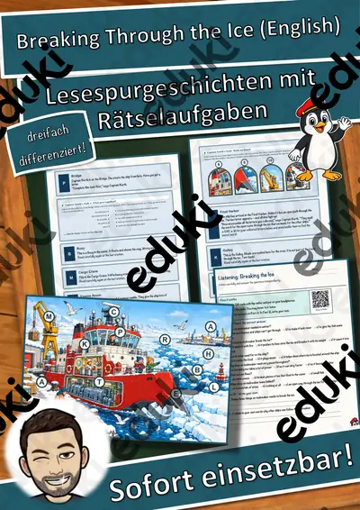
Breaking Through the Ice – Lesespurgeschichte mit Rätselaufgaben auf Englisch (Klasse 6)

Brüche beim Erntefest – Bruchteile erkennen und vergleichen – Lesespurgeschichte mit Rätselaufgaben (Klasse 6)
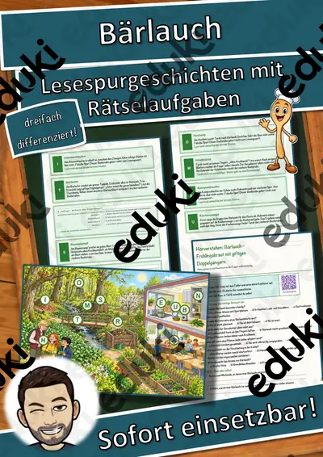
Bärlauch – Frühlingskraut mit giftigen Doppelgängern – Lesespurgeschichte mit Rätselaufgaben (Klasse 6)
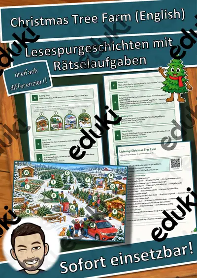
Christmas Tree Farm – Lesespurgeschichte mit Rätselaufgaben auf Englisch (Klasse 6)
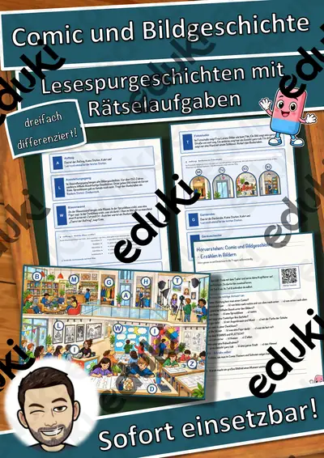
Comic und Bildgeschichte – Erzählen in Bildern – Lesespurgeschichte mit Rätselaufgaben (Klasse 6)

Das Blatt – Lesespurgeschichte mit Rätselaufgaben (Klasse 6)
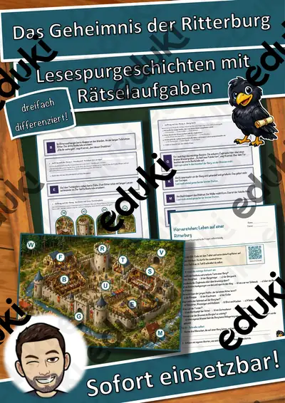
Das Geheimnis der Ritterburg – Lesespurgeschichte mit Rätselaufgaben (Klasse 6)

Das Geheimnis der Römerstadt – Lesespurgeschichte mit Rätselaufgaben (Klasse 6)

Das Gewitter – Lesespurgeschichte mit Rätselaufgaben (Klasse 6)

Das Kloster im Mittelalter – Lesespurgeschichte mit Rätselaufgaben (Klasse 6)

Das Labyrinth des Minotaurus – Lesespurgeschichte mit Rätselaufgaben (Klasse 6)

Das Reich Karls des Großen – Lesespurgeschichte mit Rätselaufgaben (Klasse 6)

Das Rondo und musikalische Formen – wie Musik gebaut ist – Lesespurgeschichte mit Rätselaufgaben (Klasse 6)

Das Schulfest – Lesespurgeschichte mit Rätselaufgaben (Klasse 6)
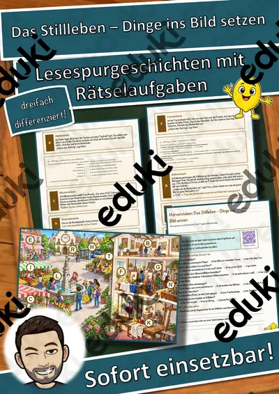
Das Stillleben – Dinge ins Bild setzen – Lesespurgeschichte mit Rätselaufgaben (Klasse 6)

Das Trinkwasser – Lesespurgeschichte mit Rätselaufgaben (Klasse 6)
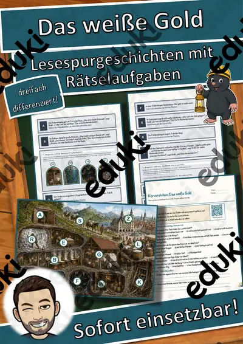
Das weiße Gold – Lesespurgeschichte mit Rätselaufgaben (Klasse 6)

Den Tisch festlich decken – Gedeck, Tischsitten und Tischschmuck – Lesespurgeschichte mit Rätselaufgaben (Klasse 6)
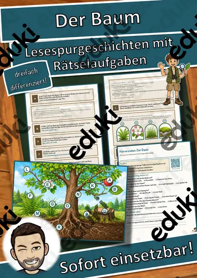
Der Baum – Lesespurgeschichte mit Rätselaufgaben (Klasse 6)

Der Igel – Lesespurgeschichte mit Rätselaufgaben (Klasse 6)

Der Jugendrat entscheidet – Lesespurgeschichte mit Rätselaufgaben (Klasse 6)

Der Mann aus dem Eis – ein Gletscherfund aus der Jungsteinzeit – Lesespurgeschichte mit Rätselaufgaben (Klasse 6)

Der Regenbogen – Lesespurgeschichte mit Rätselaufgaben (Klasse 6)
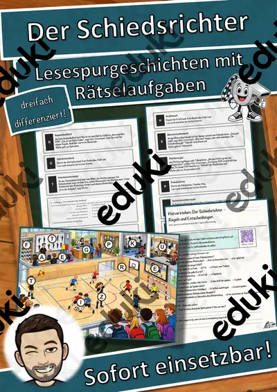
Der Schiedsrichter – Regeln und Entscheidungen – Lesespurgeschichte mit Rätselaufgaben (Klasse 6)

Der Sportplatz – Lesespurgeschichte mit Rätselaufgaben (Klasse 6)

Der Vorlesetag – gut vorlesen, gespannt zuhören – Lesespurgeschichte mit Rätselaufgaben (Klasse 6)

Der Wasserkreislauf – Lesespurgeschichte mit Rätselaufgaben (Klasse 6)

Der Weihnachtsbasar – planen, kalkulieren, verkaufen – Lesespurgeschichte mit Rätselaufgaben (Klasse 6)

Die Blüte – Lesespurgeschichte mit Rätselaufgaben (Klasse 6)

Die Christrose – eine Blume blüht im Schnee – Lesespurgeschichte mit Rätselaufgaben (Klasse 6)

Die Ernährungspyramide – Lesespurgeschichte mit Rätselaufgaben (Klasse 6)

Die Kelten – Leben in einem keltischen Dorf – Lesespurgeschichte mit Rätselaufgaben (Klasse 6)
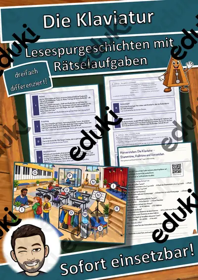
Die Klaviatur – Stammtöne, Halbtöne und Vorzeichen – Lesespurgeschichte mit Rätselaufgaben (Klasse 6)

Die Meister der Zunft – Lesespurgeschichte mit Rätselaufgaben (Klasse 6)
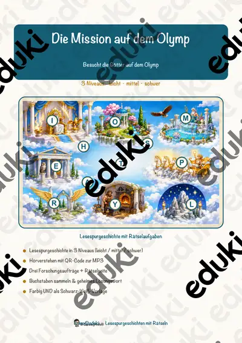
Die Mission auf dem Olymp – Lesespurgeschichte mit Rätselaufgaben (Klasse 6)

Die Olympischen Spiele sind in Gefahr – Lesespurgeschichte mit Rätselaufgaben (Klasse 6)

Die Saturnalien – das Winterfest der Römer – Lesespurgeschichte mit Rätselaufgaben (Klasse 6)

Die Stadt im Mittelalter – Lesespurgeschichte mit Rätselaufgaben (Klasse 6)

Die Stimme und der Chor – wie wir singen – Lesespurgeschichte mit Rätselaufgaben (Klasse 6)

Die Tonleiter – Dur und Moll – Lesespurgeschichte mit Rätselaufgaben (Klasse 6)

Die Wikinger – Lesespurgeschichte mit Rätselaufgaben (Klasse 6)

Dirigieren – Musik mit den Händen führen – Lesespurgeschichte mit Rätselaufgaben (Klasse 6)
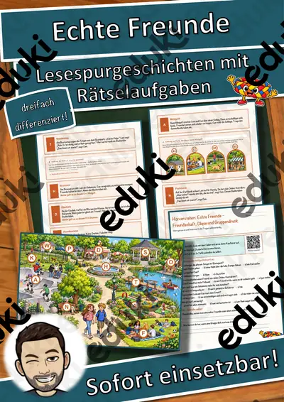
Echte Freunde – Freundschaft, Clique und Gruppendruck – Lesespurgeschichte mit Rätselaufgaben (Klasse 6)

Fehlersuche – Bugs finden und beheben – Lesespurgeschichte mit Rätselaufgaben (Klasse 6)

Freizeit sinnvoll gestalten – was macht meine freie Zeit wertvoll? – Lesespurgeschichte mit Rätselaufgaben (Klasse 6)

Hefeteig – Ofen-Krapfen für die Faschingsfeier – Lesespurgeschichte mit Rätselaufgaben (Klasse 6)

Holzverbindungen – leimen, nageln, schrauben, dübeln – Lesespurgeschichte mit Rätselaufgaben (Klasse 6)

Illustration – wie Bilder ins Buch kommen – Lesespurgeschichte mit Rätselaufgaben (Klasse 6)

Jeder ist einzigartig – Lesespurgeschichte mit Rätselaufgaben (Klasse 6)
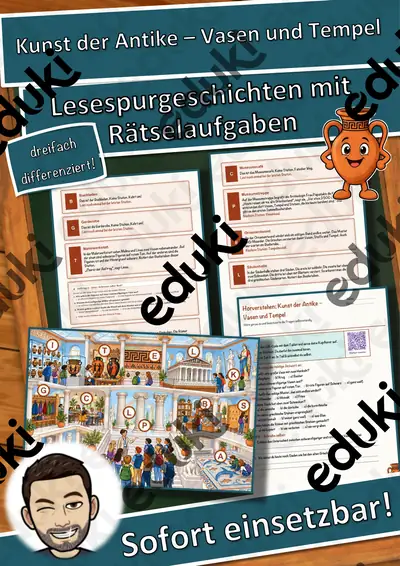
Kunst der Antike – Vasen und Tempel – Lesespurgeschichte mit Rätselaufgaben (Klasse 6)

Kunst im alten Ägypten – Lesespurgeschichte mit Rätselaufgaben (Klasse 6)

Ludwig van Beethoven – Musik gegen die Stille – Lesespurgeschichte mit Rätselaufgaben (Klasse 6)

Lärm, Musik und Gehör – so schützt du deine Ohren – Lesespurgeschichte mit Rätselaufgaben (Klasse 6)

Materialpaket Advent und Winter für die 6. Klasse: 7 Lesespurgeschichten mit Rätselaufgaben (Weihnachtsbasar, Saturnalien, Lichterfeste & mehr)
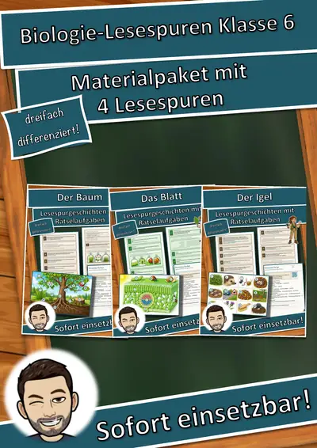
Materialpaket Lesespurgeschichten Biologie Klasse 6: 4 Lesespuren mit Rätselaufgaben, dreifach differenziert
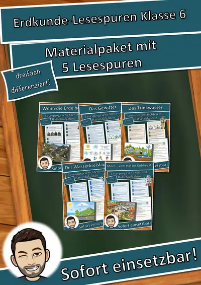
Materialpaket Lesespurgeschichten Erdkunde Klasse 6: 5 Lesespuren mit Rätselaufgaben, dreifach differenziert
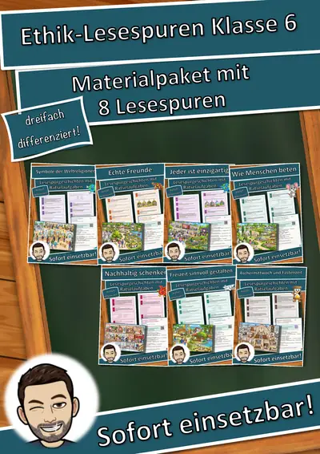
Materialpaket Lesespurgeschichten Ethik Klasse 6: 8 Lesespuren mit Rätselaufgaben, dreifach differenziert
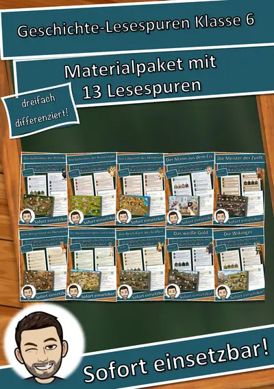
Materialpaket Lesespurgeschichten Geschichte Klasse 6: 13 Lesespuren mit Rätselaufgaben, dreifach differenziert
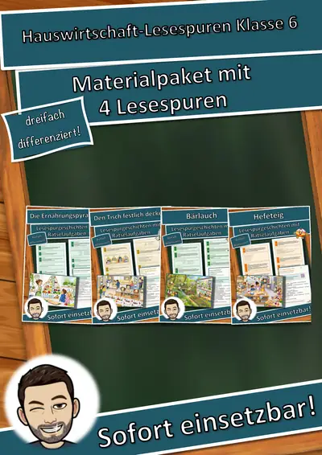
Materialpaket Lesespurgeschichten Hauswirtschaft Klasse 6: 4 Lesespuren mit Rätselaufgaben, dreifach differenziert

Materialpaket Lesespurgeschichten Informatik Klasse 6: 6 Lesespuren mit Rätselaufgaben, dreifach differenziert
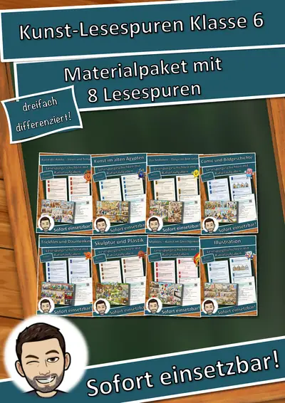
Materialpaket Lesespurgeschichten Kunst Klasse 6: 8 Lesespuren mit Rätselaufgaben, dreifach differenziert
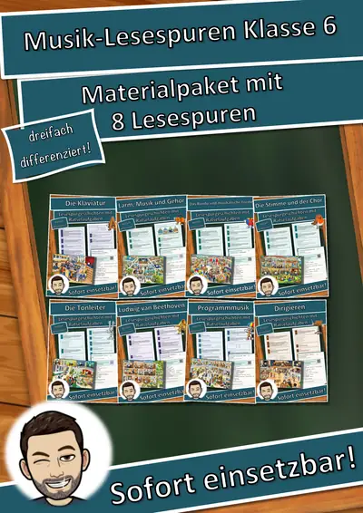
Materialpaket Lesespurgeschichten Musik Klasse 6: 8 Lesespuren mit Rätselaufgaben, dreifach differenziert

Materialpaket Lesespurgeschichten Sport Klasse 6: 5 Lesespuren mit Rätselaufgaben, dreifach differenziert

Milch – vom Hof ins Kühlregal – Lesespurgeschichte mit Rätselaufgaben (Klasse 6)

Mobiles – Kunst im Gleichgewicht – Lesespurgeschichte mit Rätselaufgaben (Klasse 6)

Nachhaltig schenken – Zeit, Selbstgemachtes und Verpackung ohne Müll – Lesespurgeschichte mit Rätselaufgaben (Klasse 6)

Potato Harvest on the Farm – Lesespurgeschichte mit Rätselaufgaben auf Englisch (Klasse 6)

Programmmusik – Musik malt Bilder – Lesespurgeschichte mit Rätselaufgaben (Klasse 6)

Präsentationen gestalten – Folien, die überzeugen – Lesespurgeschichte mit Rätselaufgaben (Klasse 6)

Puls und Atmung beim Sport – was mein Körper mir verrät – Lesespurgeschichte mit Rätselaufgaben (Klasse 6)

Reise durch das Sonnensystem – Lesespurgeschichte mit Rätselaufgaben (Klasse 6)
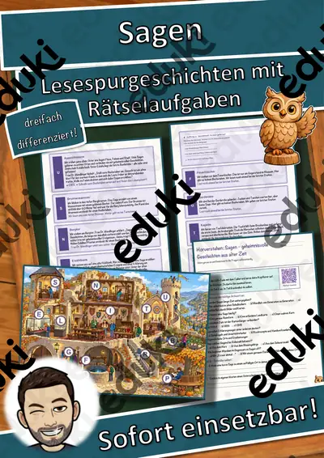
Sagen – geheimnisvolle Geschichten aus alter Zeit – Lesespurgeschichte mit Rätselaufgaben (Klasse 6)

Schlittschuhlaufen – sicher übers Eis gleiten – Lesespurgeschichte mit Rätselaufgaben (Klasse 6)

Skulptur und Plastik – Kunst zum Umrunden – Lesespurgeschichte mit Rätselaufgaben (Klasse 6)

Sport früher – Turnvater Jahn und die Spiele der Großeltern – Lesespurgeschichte mit Rätselaufgaben (Klasse 6)

Suchen und Sortieren – Algorithmen mit Spielkarten – Lesespurgeschichte mit Rätselaufgaben (Klasse 6)
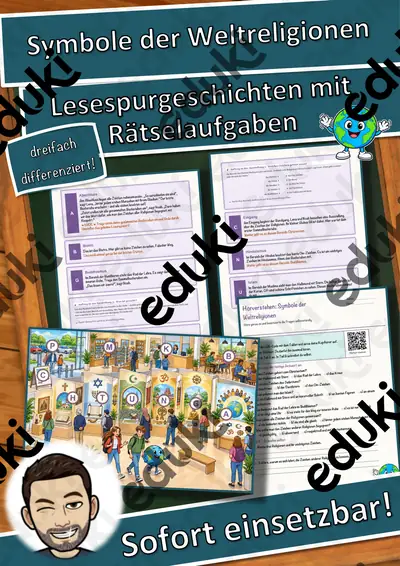
Symbole der Weltreligionen – Lesespurgeschichte mit Rätselaufgaben (Klasse 6)

The Apple Cellar – Lesespurgeschichte mit Rätselaufgaben auf Englisch (Klasse 6)
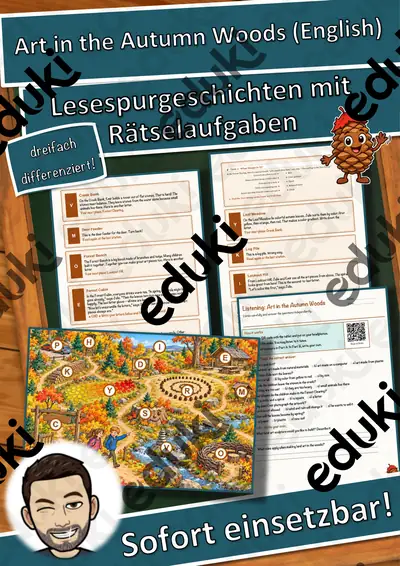
The Quiet Snowy Forest – Lesespurgeschichte mit Rätselaufgaben auf Englisch (Klasse 6)

Trickfilm und Daumenkino – wie Bilder laufen lernen – Lesespurgeschichte mit Rätselaufgaben (Klasse 6)

Upcycling – aus Alt mach Neu – Lesespurgeschichte mit Rätselaufgaben (Klasse 6)

Urheberrecht und Lizenzen – Bilder, Musik und Texte richtig nutzen – Lesespurgeschichte mit Rätselaufgaben (Klasse 6)

Vom Morgenland ins Abendland – Lesespurgeschichte mit Rätselaufgaben (Klasse 6)

Was eine Gemeinde alles leistet – von Wasser bis Winterdienst – Lesespurgeschichte mit Rätselaufgaben (Klasse 6)
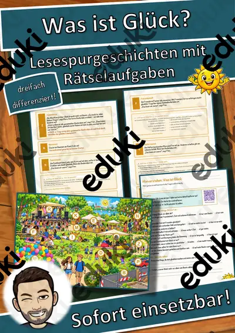
Was ist Glück? – Lesespurgeschichte mit Rätselaufgaben (Klasse 6)

Weihnachtsgewürze – Zimt, Nelke, Vanille & Co. – Lesespurgeschichte mit Rätselaufgaben (Klasse 6)

Wenn die Erde bebt – Lesespurgeschichte mit Rätselaufgaben (Klasse 6)

Wie Menschen beten – ein Rundgang im Park der Religionen – Lesespurgeschichte mit Rätselaufgaben (Klasse 6)

Wie eine Nachricht durchs Internet reist – Pakete, Router, Adressen – Lesespurgeschichte mit Rätselaufgaben (Klasse 6)
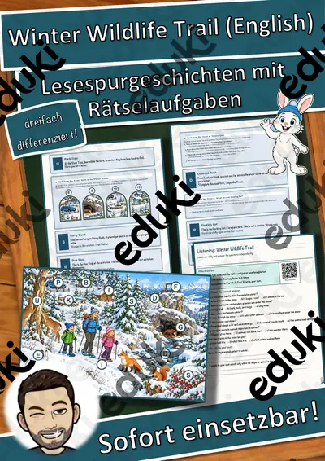
Winter Wildlife Trail – Lesespurgeschichte mit Rätselaufgaben auf Englisch (Klasse 6)
Lesespurgeschichten in der 6. Klasse
In der sechsten Klasse tragen die Aufgaben mehr Fachsprache, und die Texte verlangen, Informationen aus mehreren Sätzen zusammenzuziehen.
Jede Geschichte liegt in drei Niveaustufen vor, die sich in Textlänge, Satzbau und Aufgabenanspruch unterscheiden. Weg, Stationen und Lösungswort bleiben gleich, sodass alle Fassungen gleichzeitig in einer Klasse laufen können.
Themen auf dieser Seite
Beispiele aus dieser Sammlung: Fehlersuche · Was ist Glück? · Upcycling · Der Igel · Lärm, Musik und Gehör · Wie Menschen beten · Der Schiedsrichter · Mobiles.